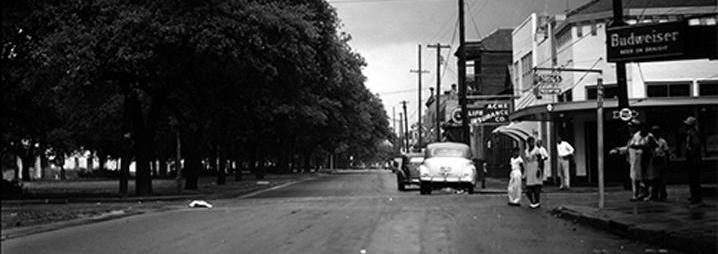

USING SANBORN MAPS
TO EXPLORE THE NORTH CLAIBORNE HISTORIC DISTRICT IN NEW ORLEANS, LA

North Claiborne Avenue at the intersection of Ursulines and Claiborne, 1947. (Source)
Sanborn Maps as Research Tools
SANBORN MAPS have a rich history as research tools. Developed in the mid-19th century to assess risk for fire insurance, they have proved an invaluable tool for historical research, thanks to their meticulous detail and accuracy. The Library of Congress has digitized over 25,000 Sanborn maps in more than 3,000 US cities, all available for perusal at their website. In this case, we are using Sanborn maps to unearth different elements of the North Claiborne corridor's commercial district. In doing so, we will also identify some methodological elements – opportunities and limitations – of doing historical geographic research with Sanborn maps.